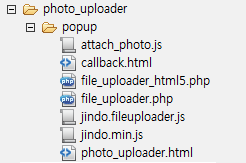
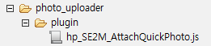

파일 구성
사진 퀵 업로더를 설치할 때 필요한 파일은 다음과 같다.
팝업 HTML 및 JavaScript
SmartEditor2 배포 파일의 /quick_photo_uploader/popup 디렉터리에는 다음과 같이 사진 퀵 업로더의 팝업 페이지를 구성하는 HTML 파일과 JavaScript 파일이 포함되어 있다.

그림 44 사진 퀵 업로더 팝업 HTML 및 JavaScript 파일 구성
각 파일의 설명은 다음과 같다.
표 8 제공되는 파일 설명
| 구분 | 설명 |
|---|---|
| callback.html | Ajax 통신용 파일. Jindo fileUpload 컴포넌트를 이용하여 파일을 업로드할 때, 페이지 전환 없이 결과를 전달받을 수 있도록 한다. |
| FileUploader.php | PHP 서버에서 사용자로부터 전송된 파일을 저장하고 파일 정보를 사용자에게 내려주는 코드. HTML5 미지원 브라우저에서 사용한다. |
| FileUploader_html5.php | PHP 서버에서 사용자로부터 전송된 파일을 저장하고 파일 정보를 사용자에게 내려주는 코드. HTML5가 지원되는 브라우저에서 사용한다. |
| Jindo_fileUpload.js | Jindo 컴포넌트 중 fileUpload에 필요한 코드만 포함하는 파일 |
| jindo.min.js | 사진 퀵 업로더의 JavaScript 파일에서 사용하는 JindoJS 파일 |
| Photo_Quick_UploadPopup.html | 사진 퀵 업로더에서 사용하는 HTML 팝업 페이지 |
| QuickPhotoPopup.js | Photo_Quick_UploadPopup.html 파일에서 사용하는 JavaScript 파일. 사진 퀵 업로더를 설치할 때 코드를 반드시 수정해야 한다. |
이미지
SmartEditor2 배포 파일의 \img\photoQuickPopup 디렉터리에는 다음과 사진 퀵 업로더 팝업 페이지를 구성하는 이미지 파일이 포함되어 있다.

그림 45 사진 퀵 업로더 팝업의 image 구성
사진 퀵 업로더를 설치하려면 위 이미지 파일을 복사하고 JavaScript 파일과 HTML 파일의 이미지 경로를 수정해야 한다.
에디터 플러그인
SmartEditor2 배포 파일의 /quick_photo_uploader/plugin 디렉터리에는 사진 퀵 업로더 플러그인 파일이 포함되어 있다. 파일 경로 등이 변경되면 hp_SE2M_AttachQuickPhoto.js 파일을 수정해야 한다.

그림 46 사진 퀵 업로더의 plugin 구성